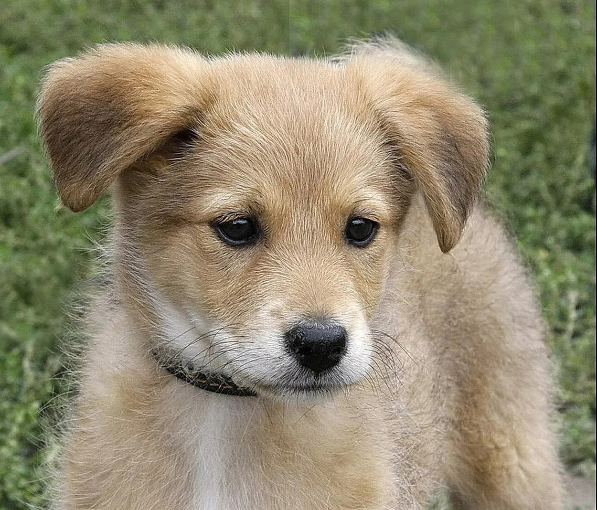
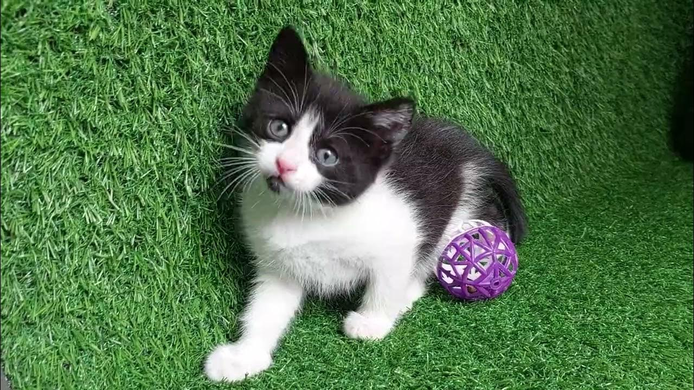

Наши подопечные

Джек
2 года, метис
Джек попал в приют после того, как его хозяин попал в больницу и больше не смог заботиться о питомце.
Первое время Джек был растерян и грустил, но сейчас он привык к волонтёрам и снова начал доверять людям.
Он очень ласковый, любит, когда его гладят по голове, и обожает играть с мячиком. Джек хорошо ходит на поводке,
знает команду «сидеть» и очень спокойно относится к другим собакам.
Ищет дом без кошек (потому что любит гоняться за ними). Отлично подойдёт семье с детьми-подростками или активным
пожилым людям.

Арчи
1 год, метис
Арчи попал в приют совсем малышом - его нашли в коробке у дороги. Первое время он боялся людей и прятался
в углу вольера, но волонтёры помогли ему поверить в себя.
Сейчас Арчи - активный и жизнерадостный пёс. Он обожает бегать и играть с другими собаками, любит жевать
игрушки и учится ходить на поводке. Уже знает команду «ко мне».
Ищет дом, где будут терпеливо заниматься его воспитанием. Арчи ответит вам безграничной любовью и станет
верным другом.

Дружок
4 месяца, метис
Дружок попал в приют вместе с братьями и сёстрами: их нашли в коробке у обочины дороги.
Сначала он был очень напуган и дрожал, когда к нему подходили. Но уже через несколько дней Дружок
понял, что здесь ему не грозит опасность.
Сейчас это весёлый, активный и невероятно любопытный щенок. Он обожает тграть с игрушками, бегать по вольеру
и знакомиться с другими собаками. Дружок очень тянется к людям: стоит войти в вольер - он сразу бежит и начинает
лизать руки.
Он быстро учится: уже знает, что ходить на пелёнку - это правильно, и с удовольствием берёт лакомства за
выполнение простых команд.
Дружок ищет дом, где ему подарят много любви, терпения и будут учить командам. Из него вырастет преданный
друг, который будет встречать вас у двери и радоваться каждому вашему приходу.

Бусинка
5 месяцев, дворовая кошка
Бусинка поступила в приют после того, как её заметили волонтёры на улице: малышка
пряталась под машиной и очень боялась прохожих. В первые дни в приюте она совсем не выходила
из укрытия, но спустя неделю начала доверять людям.
Сейчас Бусинка - спокойная и ласковая девочка. Она не шумит, не носится по вольеру,
а предпочитает сидеть на руках или наблюдать за происходящим с безопасного расстояния.
Очень аккуратная: всегда ходит в лоток, не царапает мебель и любит, когда её гладят по голове.
С другими кошками Бусинка дружит, не конфликтует. Идеально подойдёт для семьи с детьми или для
пожилых людей, которые ишут тихого и преданного питомца.
Бусинка мечтает о доме, где её не будут ругать за осторожность, а дадут время привыкнуть.
Она ответит на заботу тёплым мурчанием и крепкой дружбой.

Мурка
2 года, дворовая кошка
Мурка попала в приют после того, как её подобрали на улице прохожие - она сидела возле мусорных баков
и жалобно мяукала. В первый месяц она была очень осторожной: не подходила к людям, шипела на волонтёров
и пряталась в углу вольера.
Но постепенно Мурка поняла, что здесь ей не желают зла. Сейчас это спокойная и ласковая кошка, которая
любит, когда её гладят за ушком. Мурка не навязывается, но если вы сами протянете к ней руку - она начнёт тереться
и тихо мурлыкать.
Она аккуратная, всегда ходит в лоток, не царапает мебель и прекрасно уживается с другими кошками.
Мурка ищет дом, где ей дадут время привыкнуть к новой обстановке. Она не требует активных игр, ей нужен покой и забота.
Зато ночью она будет тихо спать на своей лежанке и не мешать вам отдыхать.

Снежка
1 год, дворовая кошка
Снежку привезли в приют волонтёры из другого города - её нашли замёрзшую и больную в подъезде
многоэтажки. Первую неделю она почти не двигалась, но благодаря лечению и заботе Снежка
пошла на поправку.
Сейчас это очень ласковая и общительная кошка. Она любит сидеть у окна, смотреть на птичек и мурлыкать,
когда её гладят. Снежка не боится новых людей, сама подходит знакомиться и трётся о ноги.
Она отлично ладит с другими кошками, не конфликтует и не шалит. Приучена к лотку, к когтеточке относится с уважением.
Снежка мечтает найти дом, где её будут окружать теплом и лаской. Она станет верным другом, который будет встречать
вас у двери и дарить хорошее настроение каждый день.